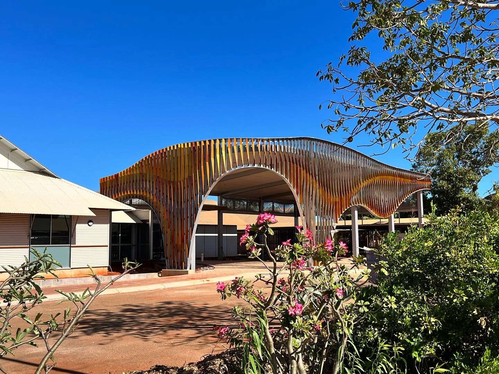
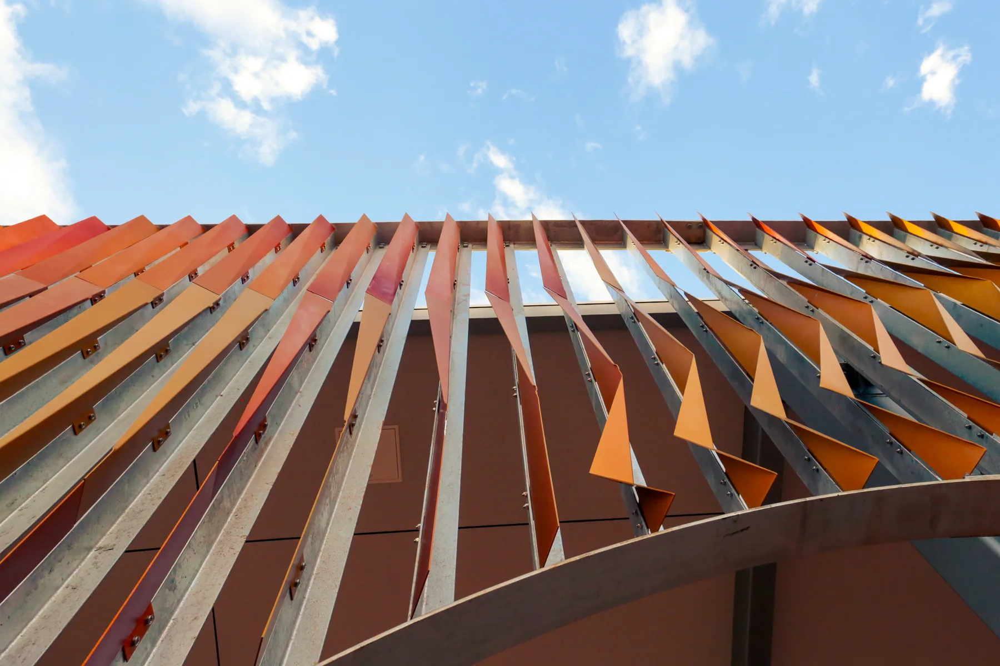

Pleated Histories North Regional TAFE, Broome
Commissioned by Dept. of Finance
This integrated entrance artwork for Broome’s premier vocational education centre draws inspiration from the pindan cliffs and fiery-red soils of the Kimberley region. The sculpture evokes processes of transformation and weathering found in the geological patterns of Gantheaume Point, whose history extends to the Early Cretaceous period, approximately 130 million years ago.
Extending across thirty-two metres of façade, the artwork comprises 110 uniquely folded, powder-coated fins attached to a custom subframe welded to the architectural shade structure. The spacing and cut-outs were optimised in response to material, budget and fabrication constraints while preserving the artist’s intended façade profile.
- Design: Andrei Smolik, Jacky Cheng, Daniel Giuffre
- Year completed: 2023
- Client: Dept. of Finance
- Architect: Engawa Architects
- Fabricator: Kilmore Group
- Budget: $210,000
- Size: 18.8m x 10.7m x 6.2m or 300 linear meters of fins


